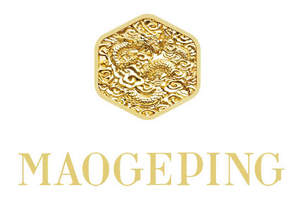

Trade Mark Journal No.2025/016 18 April 2025
UK00004182411 1 April 2025 (3,4,21,35,41,44)

- Class 3
- Cleansing milk for toilet purposes; Facial cleansers; Essential oils; Lipsticks; Cosmetics; Eyebrow cosmetics; Perfumes; Make-up powder; Rouges; Make-up; Perfumery; Wax melts [fragrancing preparations]; Cotton sticks for cosmetic purposes; Beauty masks; Mascara; Serums for cosmetic purposes; Make-up palettes containing cosmetics; Moisturizing milk; Sun-block lotions; Eyeliner pencils; Massage candles for cosmetic purposes; Skin hydrators for cosmetic purposes; Toners for cosmetic purposes.
- Class 4
- Lanolin; Fuel; Beeswax; Candles; Scented candles; Fragranced candles; Beeswax for use in the manufacture of cosmetics; Aromatherapy fragrance candles; Perfumed candles; Candles for lighting; Mineral oil for use in the manufacture of cosmetics and skin care products; Vegetable wax; Wax for making candles.
- Class 21
- Kitchen utensils; Drinking vessels; Cosmetic utensils; Toilet cases; Eyebrow brushes; Make-up removing appliances; Make-up brushes; Eye make-up applicators; Eyelash brushes; Cosmetic sponges; Cosmetics brushes; Applicators for cosmetics; Toilet cases; Shaving brushes; Lip brushes; Bottles.
- Class 35
- Providing commercial information and advice for consumers in the choice of products and services; Organisation of exhibitions and events for commercial or advertising purposes; Marketing research in the fields of cosmetics, perfumery and beauty products; Provision of commercial information; Marketing; Provision of an online marketplace for buyers and sellers of goods and services; Personnel management consultancy; Administrative processing of purchase orders; Retail services for pharmaceutical, veterinary and sanitary preparations and medical supplies; Provision of commercial information via the Internet; Provision of business information via global computer networks.
- Class 41
- Instruction in cosmetic beauty; Educational services in the nature of beauty schools; Lending of books and other publications; Publishing of electronic books and journals online; Modelling services for artists; Party planning [entertainment]; Presentation of live performances; Production of sound and image recordings on sound and image carriers; Conducting courses, seminars and workshops; Teaching of beauty skills; Arranging and conducting of congresses; Arranging and conducting of training workshops.
- Class 44
- Plastic surgery; Beauty care services; Beautician services; Pet beauty salon services; Hair styling; Make-up services; Nail care services; Beauty consultancy; Make-up consultation services provided on-line or in-person; Consultation services in the field of make-up; Aromatherapy services; Consultancy services relating to beauty; Permanent makeup services; Beauty salon services; On-line make-up consultation services.
Mao Geping Cosmetics Co., Ltd.
Representative: Handsome I.P. Ltd